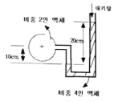
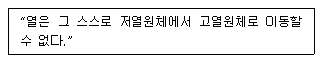
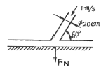
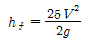
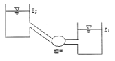
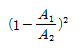
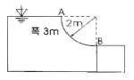
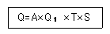

소방설비기사(기계분야) (2011-03-20 기출문제)
1과목: 소방원론
1. 화재의 일반적 특성이 아닌 것은?
- 확대성
- 정형성
- 우발성
- 불안정성
(정답률: 78%)

2. 목재건물의 화재성상은 내화건물에 비하여 어떠한가?
- 저온장기형이다.
- 저온단기형이다.
- 고온장기형이다.
- 고온단기형이다.
(정답률: 70%)
3. 다음 연소생성물 중 인체에 가장 독성이 높은 것은?
- 이산화탄소
- 일산화탄소
- 황화수소
- 포스겐
(정답률: 68%)
4. 자연발화가 원인이 되는 열의 발생 형태가 다른 것은?
- 기름종이
- 고무분말
- 석탄
- 퇴비
(정답률: 64%)
5. 황린에 대한 설명으로 틀린 것은?
- 발화점이 매우 낮아 자연발화의 위험이 높다.
- 자연발화 방지를 위해 강알칼리 수용액에 저장한다.
- 독성이 강하고 지정수량이 20kg 이다.
- 연소시 오산화인의 흰 연기를 낸다.
(정답률: 64%)
6. 불연성기체나 고체 등으로 연소물을 감싸 산소공급을 차단하는 소화방법은?
- 질식소화
- 냉각소화
- 연쇄반응차단소화
- 제거소화
(정답률: 76%)
7. 다음 중 인화점이 가장 낮은 물질은?
- 산화프로필렌
- 이황화탄소
- 메틸알코올
- 등유
(정답률: 51%)
8. 소화방법 중 제거소화에 해당되지 않는 것은?
- 산불이 발생하면 화재의 진행방향을 앞질러 벌목함
- 방안에서 화재가 발생하면 이불이나 담요로 덮음
- 가스 화재시 밸브를 잠궈 가스흐름을 차단함
- 불타고 있는 장작더미 속에서 아직 타지 않은 것을 안전한 곳으로 운반
(정답률: 75%)
9. 고층건축에서 연기의 제거 및 차단은 중요한 문제이다. 연기제어의 기본방법이 아닌 것은?
- 희석
- 차단
- 배기
- 복사
(정답률: 76%)
10. 화재에 관한 설명으로 옳은 것은?
- PVC 저장창고에서 발생하는 화재는 D급화재이다.
- PVC 저장창고에서 발생한 화재는 B급화재이다.
- 연소의 색상과 온도와의 관계를 고려할 때 일반적으로 암적색보다는 휘적색의 온도가 높다.
- 연소의 색상과 온도와의 관계를 고려할 때 일반적으로 휘백색보다는 휘적색의 온도가 높다.
(정답률: 70%)
11. 제1종 분말소화약제가 요리용 기름이나 지방질 기름의 화재시 소화효과가 탁월한 이유에 대한 설명으로 가장 옳은 것은?
- 비누화 반응을 일으키기 때문이다.
- 요오드화 반응을 일으키기 때문이다.
- 브롬화 반응을 일으키기 때문이다.
- 질화 반응을 일으키기 때문이다.
(정답률: 72%)
12. 제1종 분말소화약제의 열분해 반응식으로 옳은 것은?
- 2NaHCO3 → Na2CO3 + CO2 +H2O
- 2KHCO3 → K2CO3 + CO2 +H2O
- 2NaHCO3 → Na2CO3 + 2CO2 +H2O
- 2KHCO3 → K2CO3 + 2CO2 +H2O
(정답률: 70%)
13. 가연물의 주된 연소형태를 틀리게 나타낸 것은?
- 목재 : 표면연소
- 섬유 : 분해연소
- 유황 : 증발연소
- 피크린산 : 자기연소
(정답률: 49%)
14. 이산화탄소에 대한 설명으로 틀린 것은?
- 불연성 가스로서 공기보다 무겁다.
- 임계온도는 97.5℃ 이다.
- 고체의 형태로 존재할 수 있다.
- 상온, 상압에서 기체 상태로 존재한다.
(정답률: 70%)
15. 물리적 방법에 의한 소화라고 볼 수 없는 것은?
- 부촉매의 연쇄반응 억제작용에 의한 방법
- 냉각에 의한 방법
- 공기와의 접촉 차단에 의한 방법
- 가연물 제거에 의한 방법
(정답률: 74%)
16. 화재발생시 피난기구로 직접 활용할 수 없는 것은?
- 완강기
- 무선통신보조설비
- 피난사다리
- 구조대
(정답률: 77%)
17. 소화기구(자동식소화기 및 자동확산소화용구, 고체 에어로졸 자동소화기를 제외한다.)는 바닥으로부터 높이 몇 m 이하의 곳에 비치하여야 하는가?
- 0.5
- 1.0
- 1.5
- 2.0
(정답률: 64%)
18. 건물화재시 패닉(panic)의 발생원인과 직접적인 관계가 없는 것은?
- 연기에 의한 시계 제한
- 유독가스에 의한 호흡 장애
- 외부와 단절되어 고립
- 건물의 불연 내장재
(정답률: 78%)
19. BLEVE 현상을 가장 옳게 설명한 것은?
- 물이 뜨거운 기름표면 아래서 끓을때 화재를 수반하지 않고 over flow 되는 현상
- 물이 연소유의 뜨거운 표면에 들어 갈 때 발생되는 over flow 현상
- 탱크 바닥에 물과 기름의 에멀젼이 섞여있을 때 물의 비등으로 인하여 급격하게 over flow 되는 현상
- 탱크 주위 화재로 탱크 내 인화성 액체가 비등하고 가스부분의 압력이 상승하여 탱크가 파괴되고 폭발을 일으키는 현상
(정답률: 70%)
20. 화재의 소화원리에 따른 소화방법의 적용이 잘못된 것은?
- 냉각소화 : 스프링클러설비
- 질식소화 : 이산화탄소소화설비
- 제거소화 : 포소화설비
- 억제소화 : 할로겐화합물소화설비
(정답률: 74%)
2과목: 소방유체역학
21. 10kW의 전열기를 3시간 사용하였다. 전 방열량은 몇 kJ 인가?
- 12810
- 16170
- 25800
- 108000
(정답률: 53%)
22. 동점성계수가 1×10-6m2/s 인 유체가 지름 2cm의 원관속을 흐르고 있다. 원관 내 유체의 평균속도가 5cm/s 라면 마찰계수는?
- 0.064
- 0.64
- 0.032
- 0.32
(정답률: 49%)
23. 소방호스의 마찰손실에 대한 설명으로 가장 옳은 것은?
- 마찰손실은 호스길이에 반비례한다.
- 호스지름이 클수록 마찰손실이 크다.
- 속도가 빠를수록 마찰손실이 크다.
- 마찰손실은 호스의 거칠기(조도)와 무관하다.
(정답률: 65%)
24. 다음 중 유체의 밀도를 측정하는 방법과 가장 관계가 없는 것은?
- 비중계를 이용하는 방법
- 질량을 알고 있는 추를 이용하는 방법
- 이미 알고 있는 체적의 용기를 이용하여 액체의 질량을 재는 방법
- 작은 관으로 액체를 통과시켜 일정량의 액체가 통과하는데 요하는 시간으로 측정하는 방법
(정답률: 50%)
25. 그림과 같은 액주계에서 원형 파이프 중심의 절대 압력은 약 몇 kPa인가? (단, 대기압은 101kPa이다.)

- 10
- 107
- 95
- 111
(정답률: 44%)
26. 견고한 밀폐 용기 안에 어떤 물질 1kg이 압력 2MPa, 온도는 250℃ 상태에 있으며 압축성 인자(Z=Pv/RT) 값은 0.9232이다. 이 물질의 기체상수가 0.46151kJ/kgㆍK일 때 용기의 체적은 약 몇 m3인가?
- 0.⑤32
- 0.⑤77
- 0.1114
- 0.1207
(정답률: 46%)
27. 다음은 어떤 열역학 법칙을 설명한 것인가?

- 열역학 제 0법칙
- 열역학 제 1법칙
- 열역학 제 2법칙
- 열역학 제 3법칙
(정답률: 56%)
28. 다음 설명 중 틀린 것은?
- 일반적인 베르누이 방정식은 마찰이 없는 비압축성 정상 유동에서 유선을 따라 성립한다.
- 베르누이 방정식은 질량보존의 법칙만으로 유도될 수 있다.
- 에너지선은 수력기울기선보다 속도수두만큼 위에 있다.
- 수력기울기선은 위치수두와 압력수두의 합을 나타낸다.
(정답률: 51%)
29. 펌프 입구의 진공계 및 출구의 압력계 지침이 흔들리고 송출유량도 주기적으로 변화하는 이상 현상은?
- 공동현상(cavitation)
- 수격작용(water hammering)
- 맥동현상(surging)
- 언밸런스(unbalance)
(정답률: 63%)
30. 대기압의 크기는 760mmHg이고 수은의 비중은 13.6일 때 240mmHg의 절대압력은 계기압력으로 약 몇 kPa인가?
- -32.0
- 32.0
- -69.3
- 69.3
(정답률: 46%)
31. 지름 20cm, 속도 1m/s인 물 제트가 그림에서와 같이 넓은 평판에 60° 경사지게 충돌한다. 제트가 평판에 수직으로 작용하는 힘 FN은 약 몇 N 인가?

- 2.72
- 3.14
- 27.2
- 31.4
(정답률: 35%)
32. 그림과 같은 펌프가 물을 낮은 저수조에서 높은 저수조로 직경 20cm인 관은 통하여 350m3/hr로 전달한다. 관 마찰손실은 대략

(V:관내 평균 유속)이고 펌프동력과 효율이 각각 90kW와 75%일 때 두 수조의 높이 차는 약 몇 m인가? (단, 물의 비중량은 9790N/m3이고, 기타 부차 손실은 무시한다.)
- 8.7
- 187
- 38.7
- 58.7
(정답률: 32%)
33. 내경 27mm의 배관 속을 정상류의 물이 매분 150L 흐를때 속도수두는 약 몇 M인가?
- 1.11
- 0.97
- 0.77
- 0.56
(정답률: 51%)
34. 연속방정식에 대한 설명으로 가장 적합한 것은?
- 질량 보존의 법칙을 만족한다.
- 뉴턴의 제 2 법칙을 만족시키는 방정식이다.
- 단면적과 유량은 서로 반비례한다는 관계를 구할 수 있다.
- 연속방정식에 따르면 실제 유체의 경우 경계면에서 속도는 상대적으로 0 이어야 한다.
(정답률: 44%)
35. 절대온도, 비체적이 각각 T1, v1인 이상기체 1kg의 압력을 P로 일정하게 유지한 상태로 가열하여 절대온도를 4T1까지 상승시킨다. 이상기체가 한 일은?
- Pv1
- 2Pv1
- 3Pv1
- 4Pv1
(정답률: 47%)
36. 회전속도 N rpm일 때 송출량 Q m3/min, 전양정 H m 인 원심펌프를 상사한 조건에서 회전속도를 1.4N rpm으로 바꾸어 작동할 때 유량 및 전양정은?
- 1.4Q, 1.4H
- 1.4Q, 1.96H
- 1.96Q, 1.4H
- 1.96Q, 1.96H
(정답률: 53%)
37. 비중이 1.03인 바닷물에 전체 부피의 15%가 수면 위에 떠 있는 빙산이 있다. 이 빙산의 비중은 얼마 정도 인가?
- 0.876
- 0.927
- 1.927
- 0.155
(정답률: 38%)
38. 지름 30cm인 원형 관과 지름 45cm인 원형 관이 급격하게 면적이 확대되도록 직접 연결되어 있을 때 작은 관에서 큰 관 쪽으로 매초 230L의 물을 보내면 연결부의 손실수두는 약 몇 m 인가? (단, 면적이 A1에서 A2로 급확대 될 때 작은 관을 기준으로 한 송실계수는

이다.)- 0.025
- 0.125
- 0.135
- 0.167
(정답률: 17%)
39. 1mm의 간격을 가진 2개의 평행 평판 사이에 물이 채워져 있는데 아래 평판은 고정시키고 위 평판을 1m/s의 속도로 움직였다. 평판 사이 물의 속도 분포는 직선적이고 물의 동점성계수가 0.804 ×10-6m2/s일 때 평판의 단위 면적(1m2)에 걸리는 전단력을 약 몇 N 인가?
- 0.6
- 0.7
- 0.8
- 0.9
(정답률: 42%)
40. 그림과 같은 수문 AB가 받는 수평성분 FH와 수직성분 FV는 각각 약 몇 N인가?

- FH = 24400, FV = 46181
- FH = 58800, FV = 46181
- FH = 58800, FV = 92363
- FH = 24400, FV = 92363
(정답률: 41%)
3과목: 소방관계법규
41. 특정소방대상물의 관계인은 방화관리자가 해임한 날부터 며칠 이내에 선임하여야 하는가?
- 10일
- 14일
- 30일
- 90일
(정답률: 64%)
42. 다음 중 소화활동설비가 아닌 것은?
- 제연설비
- 연결송수관설비
- 비상방송설비
- 연소방지설비
(정답률: 64%)
43. 특정소방대상물 중 근린생활시설과 가장 거리가 먼 것은?
- 안마시술소
- 찜질방
- 한의원
- 무도학원
(정답률: 53%)
44. 다른 시ㆍ도간 소방업무에 관해 상호응원협정을 체결하고자 할 때 포함되어야 할 사항이 아닌 것은?
- 응원출동의 요청방법
- 소방신호방법의 통일
- 소요경비의 부담에 관한 내용
- 응원출동 대상지역 및 규모
(정답률: 54%)
45. 특정소방대상물의 증축 또는 용도변경 시의 소방시설기준 적용의 특례에 관한 설명 중 옳지 않은 것은?
- 증축되는 경우에는 기존부분을 포함한 전체에 대하여 증축 당시의 소방시설 등의 설치에 관한 대통령령 또는 화재안전기준을 적용한다.
- 증축 시 기존부분과 증축되는 부분이 내화구조로 된 바닥과 벽으로 구획되어 있는 경우에는 기존부분에 대하여는 증축당시의 소방시설 등의 설치에 관한 대통령령 또는 화재안전기준을 적용하지 아니한다.
- 용도 변경되는 경우에는 기존 부분을 포함할 전체에 대하여 용도 변경 당시의 소방시설 등의 설치에 관한 대통령령 또는 화재안전기준을 적용한다.
- 용도 변경 시 특정소방대상물의 구조ㆍ설비가 화재 연소 확대 요인이 적어지거나 피난 또는 화재진압 활동이 쉬워지도록 용도 변경되는 경우에는 전체에 용도변경되기 전의 소방시설 등의 설치에 관한 대통령령 또는 화재안전기준을 적용한다.
(정답률: 26%)
46. 위험물 간이저장탱크 설비기준에 대한 설명으로 맞는 것은?
- 통기관은 지름 최소 40mm 이상으로 한다.
- 용량은 600L 이하 이어야 한다.
- 탱크의 주위에 너비는 최소 1.5m 이상의 공지를 두어야 한다.
- 수압시험은 50kPa 의 압력으로 10분간 실시하여 새거나 변형되지 아니하여야 한다.
(정답률: 34%)
47. 다음 중 소방법상의 소방대상물이 아닌 것은?
- 산림
- 선박건조구조물
- 항공기
- 차량
(정답률: 49%)
48. 소방용품에 해당되는 것은?
- 휴대용 비상조명등
- 방염액 및 방염도료
- 이산화탄소 소화약제
- 화학반응식 거품소화기
(정답률: 40%)
49. 특수가연물의 저장 및 취급의 기준을 위반한 자가 2차 위반시 과태료 금액은?
- 20만원
- 50만원
- 100만원
- 150만원
(정답률: 37%)
50. 다음 특정소방대상물 중 자동식 소화기를 설치하여야 하는 것은?
- 아파트
- 지하가 중 터널로서 길이가 1000m 이상인 터널
- 지정문화재 및 가스시설
- 항공기 격납고
(정답률: 49%)
51. 방염업의 등록 결격사유에 해당하지 않는 것은?
- 금치산자
- 방염업의 등록이 취소된 날부터 3년이 지난 자
- 위험물안전관리법에 따른 금고 이상의 형의 집행유예 선고를 받고 그 유예기간 중에 있는 자
- 위험물안전관리법에 따른 금고 이상의 실형의 선고를 받고 그 집행이 종료되거나 집행이 면제된 날로부터 2년이 지나지 아니한 자
(정답률: 67%)
52. 다음 용어 설명 중 옳은 것은?
- “소방시설”이라 함은 소화설비ㆍ경보설비ㆍ피난설비ㆍ소화용수설비 그 밖에 소화활동설비로서 대통령령이 정하는것을 말한다.
- “소방시설등”이라 함은 소방시설과 비상구 그 밖에 소방 관련 시설로서 행정안전부장관령이 정하는 것을 말한다.
- “특정소방대상물”이라 함은 소방시설을 설치하여야 하는 소방대상물로서 소방방재청장령이 정하는 것을 말한다.
- “소방용기계ㆍ기구”라 함은 소화기(消火器)ㆍ소화약제(消化藥劑)ㆍ방염도료(防炎塗料) 그 밖에 소방시설을 구성하는 기기로서 시ㆍ도지사령이 정하는 것을 말한다.
(정답률: 58%)
53. 제4류 위험물로서 제1석유류인 수용성 액체의 지정수량은 몇 리터인가?
- 100
- 200
- 300
- 400
(정답률: 54%)
54. 다음 중 소방기본법 시행령에서 규정하는 화재경계지구의 지정대상지역에 해당되는 기준과 가장 거리가 먼 것은?
- 시장지역
- 공장ㆍ창고가 밀집한 지역
- 소방시설ㆍ소방용수시설 또는 소방출동로가 없는 지역
- 금융업소가 밀집한 지역
(정답률: 70%)
55. 화재에 관한 위험경보를 발령할 수 있는 자는?
- 행정안전부장관
- 소방서장
- 시ㆍ도지사
- 소방방재청장
(정답률: 57%)
56. 소방관서에서 실시하는 화재원인조사 범위에 해당하는 것은?
- 소방활동 중 발생한 사망자 및 부상자
- 소방시설의 사용 또는 작동 등의 상황
- 열에 의한 탄화, 용융, 파손 등의 피해
- 소방활동 중 사용된 물로 인한 피해
(정답률: 49%)
57. 소방시설공사업자는 소방시설공사 결과 소방시설에 하자가 있는 경우 하자보수를 하여야 한다. 다음 중 하자보수를 하여야 하는 소방시설과 소방시설별 하자보수 보증기간이 잘못 나열된 것은?
- 유도등 : 2년
- 자동화재탐지설비 : 3년
- 스프링클러설비 : 3년
- 무선통신보조설비 : 3년
(정답률: 64%)
58. 다음 중에서 방화관리자를 두어야 할 특정소방대상물로서 1급 방화관리대상물이 아닌 것은?
- 지하구
- 연면적 15,000m2 이상인 것
- 건물의 층 수가 11층 이상인 것
- 1천톤 이상의 가연성가스 저장 시설
(정답률: 46%)
59. 다음 중 경보설비에 해당되지 않는 것은?
- 자동화재탐지설비
- 무선통신보조설비
- 통합감시시설
- 누전경보기
(정답률: 61%)
60. 소화활동 및 화재조사를 원활히 수행하기 위해 화재현장에 출입을 통제하기 위하여 설정하는 것은?
- 화재경계지구 지정
- 소방활동구역 설정
- 방화제한구역 설정
- 화재통제구역 설정
(정답률: 56%)
4과목: 소방기계시설의 구조 및 원리
61. 소화용수설비의 저수조 소요수량이 120m3인 경우 채수구는 최소 몇 개를 설치하여야 하는가?
- 1개
- 2개
- 3개
- 4개
(정답률: 62%)
62. 제연설비의 안전기준상 제연설비의 제연구역 구획에 대한 내용 중 잘못된 것은?
- 통로상의 제연구역은 보행중심선의 길이가 60m를 초과하지 아니할 것
- 하나의 제연구역은 직경이 최대 50m인 원안에 들어갈 수 있을 것
- 하나의 제연구역 면적은 1000m2 이내로 할 것
- 거실과 통로는 상호 제연구획 할 것
(정답률: 69%)
63. 이산화탄소 소화설비의 배관에 관한 사항으로 옳지 않은 것은?
- 강관을 사용하는 경우 고압저장 방식에서는 압력배관용 탄소강관 스케줄 중 80 이상의 것을 사용한다.
- 강관을 사용하는 경우 저압저장 방식에서는 압력배관용 탄소강관 스케줄 중 40 이상의 것을 사용한다.
- 동관을 사용하는 경우 이음이 없는 것으로서 고압저장 방식에서는 내압 15MPa 이상의 압력에 견딜 수 있는 것을 사용한다.
- 동관을 사용하는 경우 이음매 없는 것으로서 저압저장 방식에서는 내압 3.75MPa 이상의 압력에 견딜 수 있는 것을 사용한다.
(정답률: 53%)
64. 백화점의 7층에 적용되지 않는 피난기구는 다음 어느 것인가?(2022년 02월 27일 확인된 규정 적용됨)
- 구조대
- 미끄럼대
- 피난교
- 완강기
(정답률: 57%)
65. 상수도소화용수설비의 설치에 있어 호칭지름 75mm 이상의 수도배관에 소화전을 접속할 때 소화전의 최소구경을 몇 mm 이상인가?
- 75mm
- 80mm
- 100mm
- 125mm
(정답률: 73%)
66. 차고 및 주차장에 단백포 소화약제를 가용하는 포소화 설비를 하려고 한다. 바닥면적 1m2에 대한 포소화약제의 1분당 방사량의 기준은?
- 5.0ℓ 이상
- 6.5ℓ 이상
- 8.0ℓ 이상
- 3.7ℓ 이상
(정답률: 48%)
67. 할로겐화합물 소화설비의 축압식 저장용기에는 질소가스를 가압하여 충전한다. 20℃를 기준으로 했을 때, 이 저장용기내 질소가스 축압의 기준은?
- 할론1211은 2.2MPa 또는 5MPa
- 할론1301은 2.5MPa 또는 4.2MPa
- 할론1211은 0.7MPa 이상 1.4MPa 이하
- 할론1301은 0.9MPa 이상 1.6MPa 이하
(정답률: 64%)
68. 연결송수관설비의 배관설치 내용으로 적합한 것은?
- 주배관으로 설치한 구경 80mm의 배관
- 옥내소화전설비의 배관과 구경 125mm인 주배관을 겸용
- 스프링클러설비의 배관과 구경 90mm인 주배관을 겸용
- 물분무소화설비의 배관과 구경 80mm인 주배관을 겸용
(정답률: 46%)
69. 펌프의 토출관과 흡입관 사이의 배관도중 설치한 흡입기에 펌프토출량의 일부를 보내어 농도 조정밸브에서 조정된 포소화약제의 필요량을 포소화약제 탱크에서 펌프 흡입측으로 보내어 조합하는 방식은?
- 프레져사이드 푸로포셔너방식
- 라인 푸로포셔너방식
- 프레져 푸로포셔너방식
- 펌프 푸로포셔너방식
(정답률: 54%)
70. 제연설비의 배출구를 설치할 때 예상 제연구역의 각 부분으로부터 하나의 배출구까지의 수평거리는 몇 m 이내가 되어야 하는가?
- 5m
- 10m
- 15m
- 20m
(정답률: 50%)
71. 지표면에서 최상층 방수구의 높이가 70m 이상의 소방대상물에 습식 연결송수관설비 펌프를 설치할 때 최상층에 설치된 노즐선단의 최소 압력으로 적합한 것은?
- 0.15MPa
- 0.25MPa
- 0.35MPa
- 0.45MPa
(정답률: 48%)
72. 옥내소화전설비에서 옥상수조를 설치하지 아니하는 경우에 해당되지 않는 것은?
- 옥상이 없는 건축물 또는 공작물이거나 지하층만 있는 건축물
- 고가수조를 가압송수장치로 설치한 옥내소화전 설비
- 수원이 건축물의 지붕보다 높은 위치에 설치된 경우
- 건물의 높이가 지표면으로부터 최상층 바닥까지 10m 이하인 경우
(정답률: 48%)
73. 연결살수설비전용헤드를 사용하는 연결살수설비에서 배관의 구경이 32mm인 경우 하나의 배관에 부착할 수 있는 살수헤드의 개수는?
- 1개
- 2개
- 3개
- 4개
(정답률: 52%)
74. 11층 건축물의 주위에 옥외소화전이 5개 설치되어 있다. 필요한 수원의 저수량은?
- 7m3
- 14m3
- 28m3
- 35m3
(정답률: 63%)
75. 옥내소화전이 하나의 층에는 6개로, 또 다른 하나의 층에는 3개로, 나머지 모든 층에는 4개씩으로 설치되어 있다. 수원의 수량(m3)의 최소 기준은?(오류 신고가 접수된 문제입니다. 반드시 정답과 해설을 확인하시기 바랍니다.)
- 7.8m3
- 10.4m3
- 13m3
- 15.6m3
(정답률: 57%)
76. 스프링클러헤드의 설치에 있어 층고가 낮은 사무실의 양측 벽면 상단에 측벽형 스프링클러헤드를 설치하여 방호하려고 한다. 사무실의 폭이 몇 m 이하일 때 헤드의 포용이 가능한가?
- 9m 이하
- 10.8m 이하
- 12.6m 이하
- 15.5m 이하
(정답률: 52%)
77. 스프링클러설비의 헤드 설치높이가 10m 이상인 지하철 대합실의 경우 전용 수원의 최소 기준량(m3)은?
- 25m3
- 32m3
- 16m3
- 48m3
(정답률: 45%)
78. 인산염을 주성분으로 한 분말소화약제를 사용하는 분말 소화설비의 소화약제 저장용기의 내용적은 소화약제 1kg당 얼마이어야 하는가?
- 0.8ℓ
- 0.92ℓ
- 1ℓ
- 1.25ℓ
(정답률: 60%)
79. 포소화설비의 화재안전기준에서 고정포방출구 방식으로 소화약제를 방출하기 위하여 필요한 양을 산출하는 다음 공식에 대한 설명으로 틀린 것은? Q=A×Q1×T×S

- Q : 포 소화약제의 양(ℓ)
- T : 방출시간 (min)
- A : 탱크의 체적(m3)
- S : 포 소화약제의 사용농도(%)
(정답률: 60%)
80. 연소할 우려가 있는 개구부에 드렌처설비를 설치할 경우 스프링클러헤드를 설치하지 아니할 수 있다. 이 경우 트렌처설비의 설치기준으로 잘못된 것은?
- 드렌처헤드는 개구부 위 측에 2.5m 이내마다 1개를 설치한다.
- 제어밸브는 소방대상물 층마다 바닥 면으로부터 0.5m이상 1.5m 이하의 위치에 설치한다.
- 드렌처설비는 드렌처헤드가 가장 많이 설치된 제어밸브에 설치된 드렌처헤드를 동시에 사용하는 경우에 방수량이 80ℓ/min 이상이어야 한다.
- 드렌처설비는 드렌처헤드가 가장 많이 설치된 제어밸브에 설치된 드렌처헤드를 동시에 사용하는 경위 헤드선단에 방수압력이 0.1MPa 이상이어야 한다.
(정답률: 60%)